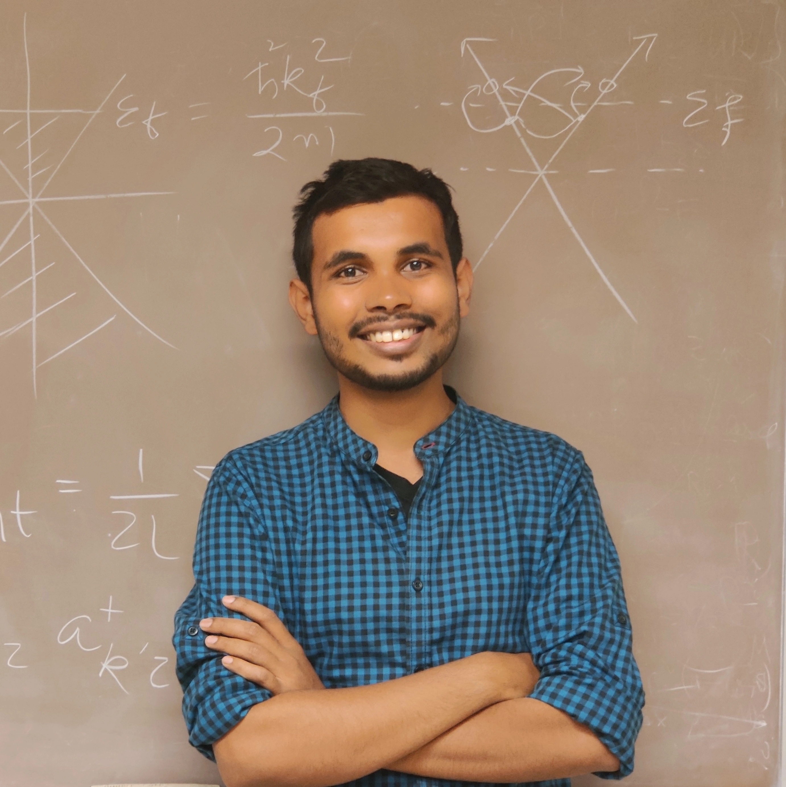

Pronoy Das
Donnan Fellow | Graduate Research Assistant
I work on quantum optics and quantum nanophotonics: structured light (STOVs, OAM), photonic angular momentum, and deep-microscopic electrodynamics in quantum materials, with emphasis on chiral tellurium and NV-center quantum sensing.

About
I am a researcher in quantum optics. I focus on how light can be shaped, how it twists, spins, and flows in space and time, and how those degrees of freedom couple to quantum materials. The goal is physics-first theory and computation that translates into practical capabilities for sensing, imaging, and robust photonic devices.
- Elmore Family School of Electrical and Computer Engineering
- Birck Nanotechnology Center
- Purdue Quantum Science and Engineering Institute
- Purdue University, West Lafayette, IN, USA
Now
What I am focused on
Awards
Donnan Dissertation Fellowship
Purdue University · 2026
Awarded by Purdue University for research excellence to support the final year of dissertation work.
APS Distinguished Student (DS) Award
APS Forum on International Physics · 2025
Awarded to present research at APS Global Physics Summit 2025.
Purdue ECE Bravo Award for Excellence in Teaching
Purdue University · 2024
Recognized for excellence and contributions as a Graduate Course Instructor.
Summer Research Grant
Purdue University · 2024
Competitive university-wide grant to support full-time summer research.